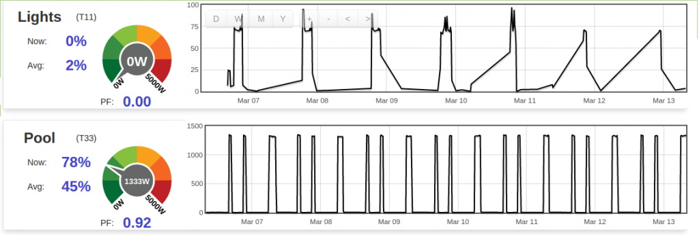

Because I do per-circuit monitoring, it's not unusual for me to post long runs of 0W on a feed. The Lights circuit is a good example; unless somebody visits the basement it'll be 0W all day and only come to life in the evening. I post that to a PHPFIWA feed. I was never sure whether each zero got stored, or whether emoncms just stored the start/stop times of the long zero run. In any case, a rawdata graph of the feed used to do the right thing. I'd get a nice sharp rising edge when the first of the lights came on in the evening, and nice sharp falling edge when everyone had retired for the night. You could even see bathroom visits in the middle of the night.
As of today (maybe yesterday?) that behaviour has changed. emoncms.org seems to be doing one big diagnonal extrapolation from the first zero reading, to the first non-zero reading. I've checked the feed and can see it being refreshed wth a zero every 10 seconds as expected, so I don't think anything has changed on the sensing side.
By comparison, the pool has a similar binary ON/OFF state, but when it's off it has a few watts of background electronics running, so is never zero, and rarely the same on two consecutive posts. You can see its nice sharp edges below. That's how the light circuit used to look until today. Does anyone know if anything has changed that would explain this? And what I can do to avoid it? I guess I could add a small amount of artificial ripple in the Lights reading, but that would seem to defeat the purpose of any run detection emoncms.org might be trying to do.

Re: emoncms.org behaviour changed with runs of zeros? [SOLVED]
This is the same problem as in this thread
http://openenergymonitor.org/emon/node/10293
Re: emoncms.org behaviour changed with runs of zeros? [SOLVED]
Thanks, I'd missed that thread because I don't use multigraph. I'll continue discussions over on that thread, and have also linked it back to this one, in case anyone else has 'rawdata' issues.
Re: emoncms.org behaviour changed with runs of zeros? [SOLVED]
Thanks a lot for your help with this! replied in the multigraph thread